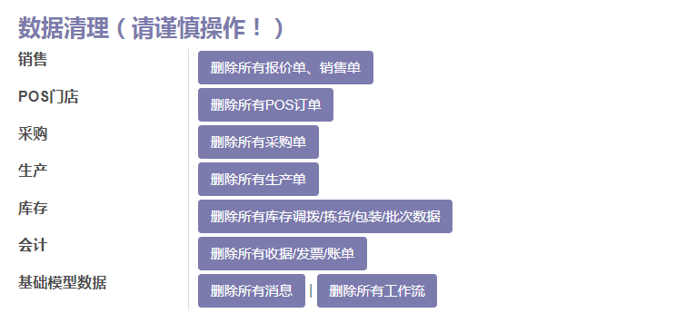
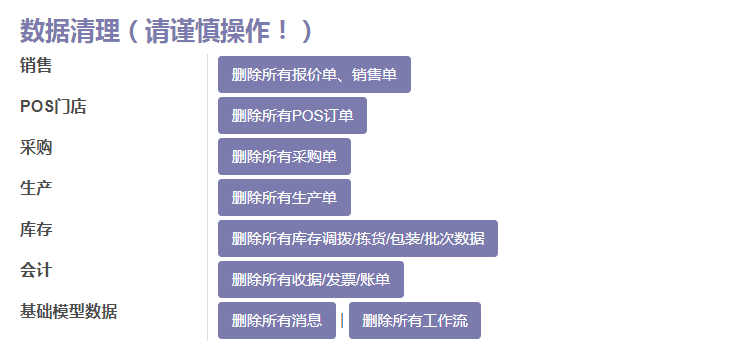

App Odoo Customize
If you are using odoo enterprise, you can get this app for more customize
Also you can get more powerful odoo apps from us. . like [superbar widget]

This moduld allows user to quickly customize and debranding Odoo. Quick debug, Language Switcher, Online Documentation Access,Quick Data Clear.
Support Odoo 13, 12, 11, 10, 9. Including communicate and enterprise version.
Update: v12.19.06.02
27. Add odoo 13 support, Just install this app on odoo 13, master branch of odoo github.
Update: v12.19.04.30
26. Add multi uninstall modules
Update: v12.19.04.18
25. Add remove expense data
Update: v12.19.04.17
Add Customize Odoo Native Module(eg. Enterprise) Url
Update: v12.19.3.15
Add reset or clear website blog data
Update: v12.19.3.12
Optimize chinese translate and document.
Fix bug: Data reset.
Update: v12.19.1.20
Fix bug: Save config error.
Update: v12.19.1.05
Fix bug: If you install Muk moudle, odooapp customize would pop error like "attachment_location". Sometime you need to uninstall this app and restart odoo, install again to take affect.
Update: v12.0.12.25
add 22. Update online manual and developer document to odoo12.
Update: v12.0.11.08
Add 21. Reset Account Chart.
Update: v12.0.9.30
Add 20. Show quick upgrade in app dashboard
Update: v12.0.9.25
Now ready for odoo 12, please email to me. guohuadeng@hotmail.com
Update: v12.0.7.23
Fix Login bug when install website.
Add 19. One Click to clear all data (Sometime pls click twice)
Add 18. Show/Hide Author and Website in Apps Dashboard
More Powerful addons:
Add Odoo 12, 11 Support
- 1. Deletes Odoo label in footer
- 2. Replaces "Odoo" in Windows title
- 3. Customize Documentation, Support, About links and title in usermenu
- 4. Adds "Developer mode" link to the top right-hand User Menu.
- 5. Adds Quick Language Switcher to the top right-hand User Menu.
- 6. Adds Country flags to the top right-hand User Menu.
- 7. Adds English and Chinese user documentation access to the top right-hand User Menu.
- 8. Adds developer documentation access to the top right-hand User Menu.
- 9. Customize "My odoo.com account" button
- 10. Standalone setting panel, easy to setup.
- 11. Provide 236 country flags.
- 12. Multi-language Support.
- 13. Change Powered by Odoo in login screen.(Please change '../views/app_odoo_customize_view.xml' #15)
- 14. Quick delete test data in Apps: Sales/POS/Purchase/MRP/Inventory/Accounting/Project/Base Models.
- 15. Reset All the Sequence to beginning of 1: SO/PO/MO/Invoice...
- 16. Fix odoo reload module translation bug while enable english language
- 17. Stop Odoo Auto Subscribe(Performance Improve)
- 18. Show/Hide Author and Website in Apps Dashboard (odoo 11 only)
- 19. One Click to clear all data (Sometime pls click twice)
- 20. Show quick upgrade in app dashboard, click to show module info not go to odoo.com
- 21. Can clear and reset account chart. Be cautious.
- 22. Update online manual and developer document to odoo12.
- 23. Add reset or clear website blog data
- 24. Customize Odoo Native Module(eg. Enterprise) Url
- 25. Add remove expense data
- 26. Add multi uninstall modules
- 27. Add odoo 13 support, Just install this app on odoo 13, master branch of odoo github.
This module can help to white label the Odoo.
Also helpful for training and support for your odoo end-user.
The user can get the help document just by one click.

Odoo Customize(Debranding Title,Language,Documentation,Quick Debug)

odoo 13 Ready for communicate and enterprise edition
Easy data cleanup

Multi-language support: Chinese ready
 

How to use: Go to Settings -> odooApp Settings

Set System Icon (odoo 10 only)

Show/Hide Author and Website in Apps Dashboard
Before

After uncheck "Show Author in Apps Dashboard"

Show quick upgrade in app dashboard, click to show module info not go to odoo.com
No more redirect to odoo.com

Setup more flags: just rename the flag pic to locale code of the country
You can find the pictures in "\app-odoo\app_odoo_customize\static\src\img\flags"

Customize Module Url(eg. Enterprise).

Quick Delete test Data.
You can quickly delete all the test data in Apps: Sales/POS/Purchase/MRP/Inventory/Accounting/Message/Workflow etc.